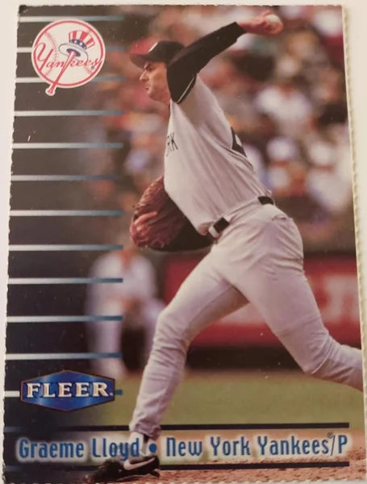

Graeme Lloyd
Career Highlights & Facts
(Facts are AI-generated and may require verification)
- Became the first Australian-born player to win a World Series championship.
- Earned two consecutive World Series titles with the New York Yankees in 1996 and 1998.
- Recorded a career-high 70 appearances during the 1997 season.
Would you like to find out more about Graeme Lloyd?
Career Totals
| WAR | W | L | ERA | G | GS | SV | IP | SO | WHIP |
|---|---|---|---|---|---|---|---|---|---|
| 5.2 | 30 | 36 | 4.04 | 568 | 0 | 17 | 533.0 | 304 | 1.353 |
Statistics via Baseball-Reference.com
The Original Clue